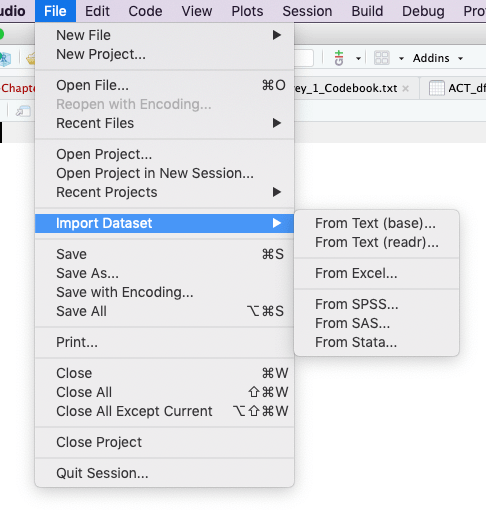

- Introduction
- 1 Research Questions
- 2 Picturing & Describing Data
- 2.1 End-of-Chapter Exercises
- 2.2 Put some indidual scores in context
- 2.3 Comparing the positive and negative affect of a partipant
- 2.4 Religious Beliefs
- 2.5 Working with the oiginal Excel data set
- References
2.5 Working with the oiginal Excel data set
2.5.1 Load data set from Excel file
In RStudio there are several options to import data files via the menu available. I generally prefer .csv files using the option From Text (readr). readr is a package included in tidyverse.


In the import data window you can preview the first 50 data. The R program code is displayed in the bottom right section of the window, so that you can automate this step. This is not only time saving but also necessary for better reproducibility. As we already have loaded readr and do not want to display the dataset in RStudio automatically we only need the second line of the program code.
## Error: '../_Material/AllEOC_Exercises/College_Survey_1/College_Survey_1.csv' does not exist in current working directory ('/Users/petzi/Documents/Meine-Repos/itns-solutions').After loading the dataset you will see in the console window the parameters readr has used to parse the column specification. This all is done normally correctly, automatically, and hassle-free.
But it is import to check these parsing decisions made by readr. Ignore the strange [31m and [39m strings in the printed output. These are the internal characters for changing text to red color. This is the way readr warns you that there are character columns in the table. You can convert them to factor variable but this is with extra columns for Gender (Gender_Code), Schoolyear (Schoolyear_Code), and Student_Athlete (Student_Athlete_Code) already done.
Remains Exercise and Rave_Score. Both columns contain numbers and should display like the default mode in the format col_double() which is the R code for double precision floating point numbers. We have to inspect these two columns more in detail: Use the command View(college1) from the console or display the data set by choosing it form the tab Environment on the right upper window.
The reason for the wrong format is that the variable Exercise contains ‘-’ and Raven_Score has ‘%’-signs added after the numbers. I will deal with this problem later, when we are going to use one of this variables.
During the inspection of the data set I noticed two other minor problems:
- The last few rows — from row 244 – 247 are emtpy, respectively filled witn NAs (“not available”). We may delete these rows.
- There is a typo in the column name
Shool_Yearwhich should beSchool_Year.
## Error in eval(expr, envir, enclos): object 'college1' not found## Error in colnames(college1)[5] <- "School_Year": object 'college1' not found2.5.2 Problems with the Exercise variable
With the Exercise variable we cannot use the above ggplot2 commands to display the histogram. Try it out and you will get the following error message:
The reason is a wrong format of the Exercise variable. Instead of numbers there are some dashes in some of the records. But the dash ‘-’ is a character, so the whole column is convert to a character variable.
The meaning of the dash sign is that there was no exercise reported. To distinguish it from NA (= not available) which means the student did not answer the question, no exercise was coded unfortunately with a ‘-’ instead of a 0. For questions of reproducibility it is always a good idea not to change the original data set. Therefore I will create a new variable Exercise_Code, convert all dashes to 0 and format the column as.double().
## Error in eval(expr, envir, enclos): object 'college1' not found## Error in eval(expr, envir, enclos): object 'college1' not found## Error in college1$Exercise_Code[college1$Exercise_Code == "-"] <- 0: object 'college1' not found> college1$Exercise_Code <- as.double(college1$Exercise_Code) # convert column from character to double## Error in eval(expr, envir, enclos): object 'college1' not foundThe last line spits out the message “NAs introduced by coercion”. This is a kind of error message saying that some number conversion did not succeed. Instead converting number strings to numbers NAs were created. To find this error was a little bit tricky but finally it turned out that the extreme outlier in row 138 with 1,810.00 was the problem: The comma in this big figure is interpreted as a character.
We could change this unique value but I will provide a general solution taken from StackOverflow. We have to delete the “destroyed” column “Exercise_Code” and start again with the conversion process. In the real praxis we would change simply the code junk above and run the whole program again.
## Error in eval(expr, envir, enclos): object 'college1' not found## Error in eval(expr, envir, enclos): object 'college1' not found## Error in eval(expr, envir, enclos): object 'college1' not found## Error in college1$Exercise_Code[college1$Exercise_Code == "-"] <- 0: object 'college1' not found> ## and now the new line: deleting commas and converting to double precision floating point numbers
> college1$Exercise_Code <- as.double(gsub(",", "", college1$Exercise_Code))## Error in gsub(",", "", college1$Exercise_Code): object 'college1' not found2.5.3 Problems with the Ravens_Score
Here we are confronted with a similar problem. The “%” sign is a character. So we have to recode this variable to get rid of the %-sign and to convert the variable to a double precise floating number. This is similar procedure as we have already done with the Exercise variable.
## Error in eval(expr, envir, enclos): object 'college1' not found## Error in gsub("%", "", college1$Raven_Score_Code): object 'college1' not found2.5.4 Gender data
Here I will reproduce the quote from the book
In this data set (of the original Excel file, pb), Gender is coded as female = 1 and male = 2. ESCI calculates that the mean is M = 1.28 for Gender. Does this make sense? How might you better summarize gender in this sample? (p.69)
No! It doesn’t make sense to calculate a mean for data on a nominal scale. It’s often convenient to represent nominal data with numerical codes, but it’s important to remember that these codes have no numerical meaning, and thus calculation of most descriptive statistics doesn’t make sense. Nominal data can be summarized with frequencies (175 females and 68 males) and relative frequencies (72.0% females and 28.0% males). (p.506)
We can use the same program lines as we did with the college_survey1 data frame.
## Error in table(college1$Gender): object 'college1' not found## Count %
## Female 175 72
## Male 68 28We can also convert the variable Gender_Code or even better the variable Gender_Code into a factor variable. This is done with the forcats package which is already loaded as part of the tidyverse.
When you hover with the mouse in the RStudio data browser over the column “Gender_Code” you will see the small message “column 3: numeric with range 1 - 2”. After running the following code try it again und you will see “column 3: factor with two levels”.
## Error in is.factor(x): object 'college1' not found## Error in eval(expr, envir, enclos): object 'college1' not found## Error in View : object 'college1' not foundWe have successfully converted the numeric column into a categorial variable with 2 levels. All calculations with numbers will fail.
## Error in mean(college1$Gender_Code): object 'college1' not found